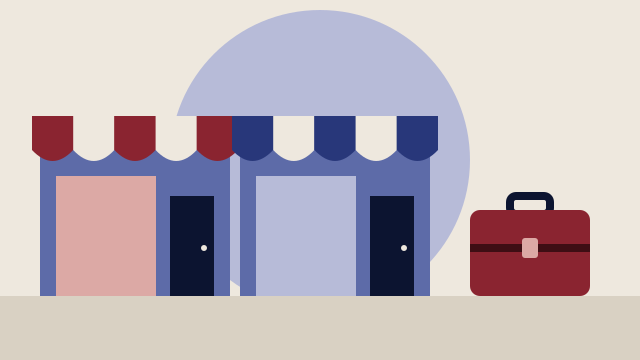

Besluttet 8. september, Plan og Byudvikling, Furesø
Overdækning af Hillerødmotorvejen i Farum - afrapportering og anbefalinger
Forvaltningen indstiller, at Plan og Byudvikling overfor Økonomi og Erhverv og byrådet anbefaler, at: 1. Godkende, at projektet om overdækningen af motorvejen ikke fortsætter i en fase 2. 2.

Kort fortalt
- Hvem
- Plan og Byudvikling, Furesø Kommune
- Hvornår
- Tirsdag 8. september 2026
- Status
- Besluttet. 1. Udsat. Udvalget ønsker tid til at drøfte sagen med ministeren og forligskredspartierne. 2. Udsat. Udvalget ønsker tid til at drøfte sagen med ministeren og forligskredspartierne. Bilag: Åben Bilag 1 - Fra vision til virkelighed Plan og Byudvikling 08-09-2026.
Læs hele sagen Kommunens egen tekst
Baggrund
I august 2025 sendte Furesø byråd et høringssvar til Vejdirektoratet (VD) om udvidelsen af
Hillerødmotorvejen i forbindelse med høringen af miljøkonsekvensvurderingen. Byrådet ønskede
en overdækning af Hillerødmotorvejen på strækningen mellem Fiskebækbroen og Slangerupvej
startende med den centrale del af Farum i stedet for de støjskærme, som Vejdirektoratet havde
foreslået igennem Farum. En overdækning skulle bidrage til at binde byen bedre sammen, reducere
støj fra motorvejen, og dermed forbedre borgernes sundhed og livskvalitet, samt støtte udviklingen
af en ny kollektiv trafikløsning. Dette ønske var baseret på et visionsoplæg fra 2025 udarbejdet af
Urban Power i samarbejde med Furesø Kommune.
I april 2026 igangsatte byrådet fase 1 – en forundersøgelse, der skulle undersøge mulighederne for
at realisere en overdækning, samt at kvalitetssikre projektets business case, som tidligere var
udarbejdet på et overordnet niveau i visionsoplægget fra 2025. Forvaltningen vurderede, at det
krævede nye støj- og trafikberegninger i forhold til at kvalificere potentielle byggeretter og
dokumentere den støjreducerende effekt.
I maj 2026 besluttede Økonomi og Erhverv supplerende, at den fulde overdækning skulle indgå i
forundersøgelsen, at arbejdet med den korte overdækning skulle fungere som et skridt på vejen
mod, at den lange overdækningsløsning kan gennemføres på længere sigt, samt at Furesø Kommune
skulle tilskynde VD til at undersøge støjdæmpningsløsninger med solceller. VD har i den
forbindelse konkluderet på baggrund af deres undersøgelser, at det ikke er en attraktiv teknisk eller
økonomisk løsning.
Et samlet Farum - overdækning som et byudviklingsprojekt
En overdækning har potentiale til at ændre motorvejen fra en barriere til et samlende element i byen
i modsætning til den barriere, som forværres af VDs projekt med at udvide motorvejen og opsætte
støjskærme gennem Farum.
Med den centrale placering ved Farum Bytorv kan en overdækning skabe et fælles bycentrum, der
forbinder de østlige og vestlige dele af byen. Den giver mulighed for nye byrum, nye forbindelser,
nye områder til udvikling, ophold og aktiviteter samt bedre sammenhæng i byen. COWI, som har
udarbejdet ” Et samlet Farum – bystrategisk vurdering og økonomisk business case for udvikling af
nyt byområde i Farum” vurderer, at projektet kan få stor betydning for Furesø Kommune både
strategisk, økonomisk og socialt. På længere sigt vil det også kunne føre til højere ejendomsværdier
og bidrage positivt til Farum attraktivitet afhængigt af, hvor godt det lykkes at skabe synergier med
det eksisterende bycenter og skabe attraktive boligområder og bymiljøer.
Plan og Byudvikling 08-09-2026
Byudviklingen er samtidig en forudsætning for at realisere projektet gennem medfinansierende
byggeretter til selve overdækningen, idet at udvikling af nye byggeretter vurderes at være den mest
oplagte medfinansieringskilde som konsekvens af en overdækning.
Projektet kræver en række strategiske og politiske valg både i forhold til kommunens overordnede
bosætningsstrategi og fremtidige forventninger til befolkningsudvikling og sammensætning, og i
forhold til, hvilken type by man ønsker at udvikle i forhold til kvalitet og tæthed. Det indebærer
blandt andet beslutninger om placering og omfang af parkering (enten i konstruktion, kælder eller
på terræn), antal etager, arealer til ophold, erhverv og detailhandel, boligtyper samt offentlige og
kulturelle funktioner, herunder en mulighed for at udvikle kulturlivet i Farum. Alle disse valg har
direkte økonomiske konsekvenser for business casen, men skal også afvejes i forhold til bykvalitet.
Derudover skal det vurderes, hvordan projektet kan bidrage til at styrke Farum Bytorv og fremme
udviklingen af detailhandlen.
Tekniske analyser
Businesscasen hviler på tekniske analyser af støj og trafik, samt et foreløbigt forslag til et
byudviklingsscenarie med potentielle byggeretter. Forvaltningen har indhentet konsulenthjælp fra
COWI til støjberegninger, trafikanalyser og beregning af business case. COWI har derudover
bidraget med sparring og strategiske perspektiver på byudviklingen. Urban Power har udarbejdet et
forslag til byudviklingsscenarie, som ligger til grund for den business case, som COWI har beregnet
i forhold til medfinansierende byggeretter. Ingholt Consult har regnet på anlægsøkonomien.
Resultaterne fra de tekniske analyser er sammenfattet i bilag 1 - ”Fra vision til virkelighed” med de
tekniske og økonomiske analyser som bilag.
Der er lavet en trafikmodel baseret på de ændringer, der i givet fald skal gennemføres, herunder
fjernelse af sløjferampen ved TSA 9 (”sneglen”) og den forventede byudvikling. Derefter er der
lavet nye støjberegninger, som bygger på en trafikmodel, der er udgangspunktet for
støjberegningerne, og som har krævet en tæt koordinering med VD, idet beregningerne også vil
danne grundlag for VDs godkendelse af eventuelle ændringer af f.eks. afkørsler og ikke mindst
nedlæggelse af sneglen, der udgør en vigtig del af business casen. Konklusionen er, at der ikke sker
radikale forandringer af trafikmønstrene på motorvejen, og at ændringerne på lokalvejene
hovedsageligt kan forklares med det stigende antal boliger. Disse boliger vil i sig selv generere øget
trafik og dermed vil medvirke til øgede støjgener for nogle af borgerne i området. De ændrede tilog afkørselsforhold, vil i mindre grad være med til at flytte på støjbelastningerne.
Der indgår tre scenarier i støjberegningen. Et med VDs løsning med støjskærme på hele
strækningen, og to scenarier med overdækning; henholdsvis med almindelige 9 meter høje
støjskærme og Hamborgskærme. Begge scenarier med overdækning reducerer
trafikstøjpåvirkningen ved eksisterende boliger sammenlignet med VDs løsning. Forskellen på VDs
støjskærme og Hamborgskærmen er dog marginal.
Boliger > Lden 58 dB
Reference – VD’s løsning med 9 meter høje
støjskærme
Scenarie 1 (overdækning og støjskærme 9
meter)
SBT
(støjbelastningstal)
Plan og Byudvikling 08-09-2026
Scenarie 2 (overdækning og
Hamborgskærme)
For områder på og nær overdækningen er det vanskeligt at sikre udendørs opholdsarealer uden
støjpåvirkning, især mellem Paltholmvej og Stavnsholtvej.
Byudviklingsscenarie og businesscase
Det byudviklingsscenarie der for nuværende indgår i beregningerne for business casen, er baseret på
principper vurderet ud fra et balanceret hensyn i forhold til bykvalitet og økonomi, og forholder sig
til eksisterende planlægning og inspiration fra andre større byudviklingsområder. Det valgte
byudviklingsscenarie er desuden baseret på forvaltningens foreløbige vurderinger og i forhold til
den eksisterende by i Farum. De byggeretter der indgår er som udgangspunkt på kommunale
arealer, og det vil kræve yderligere undersøgelser for, at VD kan acceptere en nedlæggelse af
”sneglen”. Det er undersøgt, hvordan der vil kunne bygges på arealet hvor ”sneglen” ligger.
Det byudviklingsscenarie der indgår på nuværende tidspunkt, omfatter gennemsnitlig op til 4 etager,
en parkeringsnorm på 1 pr. bolig, samt opholdsareal på 30 % af etagearealet. Den gennemsnitlige
boligstørrelse er fastsat til 80 m2 pr. bolig. Baseret på dette scenarie, kan der opføres cirka 1.250 nye
boliger, hvilket svarer til omkring 2.125 indbyggere. COWI vurderer, at dette vil medføre en samlet
netto-befolkningseffekt på cirka 3.570 borgere gennem tilflytning og flyttekæder i den eksisterende
boligmasse. De boliger, der indgår på nuværende grundlag, består udelukkende af etageboliger, som
vil kunne understøtte flyttekæder, især hvis en del af boligerne målrettes seniorer.
COWI har på baggrund af det nuværende grundlag for byudviklingsscenariet udarbejdet en business
case. I det beregnede scenarie er byggeretspriserne antaget som 5.000 kr./m² for boliger og 4000
kr./m² for erhverv. I beregningen indgår det antal boliger, som det nuværende byudviklingsscenarie
indeholder.
Ingholt Consult har udregnet anlægsomkostningerne udelukkende for selve overdækningen. Ingholt
vurderer, at udgiften er omkring 1,2 mia. kr., hvor der ikke indgår eksempelvis omkostninger til
efterbearbejdning af overdækningens overflade og afkørselsramper. Der skal derfor forventes
væsentlige meromkostninger, i forhold til den samlede økonomi forbundet med at anlægge en
overdækning.
I forhold til visionsoplægget fra 2025 er der i de nye beregninger regnet på en konstruktion, der kan
leve op til tunneldirektivet selvom overdækningen er under 500 meter, idet den så er forberedt til en
forlængelse. Der er regnet efter krav angivet af VD, samt de procenttillæg som VD anvender som
standard ved deres anlægsprojekter. Det betyder, at den er blevet dyrere end det overslag, der indgik
i visionsoplægget 2025.
Business casen viser, at der vil være en væsentlig difference mellem udgifter til anlæg og indtægter
fra byggeretterne. Der er opstillet tre scenarier, der alle viser nettoudgifter i et spænd på -1.392 mio.
kr. og - 361 mio. kr. Basisscenariet, som COWI anser for det mest sandsynlige, viser en difference i
størrelsesordenen -854 mio. kr., hvor byggeretterne udgør en medfinansieringsgrad på 33 %.
COWI har ikke indarbejdet afkørselsramper og signalanlæg i business casen, samt omkostninger til
fx bearbejdning af overfladen på overdækningen (etablering af byrummet). Denne manko skal
ligeledes finansieres.
Plan og Byudvikling 08-09-2026
Samlet set viser fase1, at en overdækning ikke giver ikke en markant bedre støjreducering i forhold
til VD’s løsning med 9 meter høje støjskærme, men der er interessante byudviklingsperspektiver i
overdækningen i forhold til at binde byen sammen.
Hvis en større støjreducerende effekt ønskes, så skal flere overdækningsetaper bygges på. Det kan
blive endnu dyrere at etablere, da der formentlig ikke er tilsvarende byggeretter, der kan aktiveres i
forhold til medfinansiering. Et overdækningsprojekt skal i givet fald primært betragtes som et
byudviklingsprojekt med mulighed for at samle byen, frem for et infrastruktur- eller støjprojekt.
Med den rigtige planlægning og udviklingstakt vil der kunne skabes en attraktiv bydel.
Hovedpointer fra fase 1
På baggrund af den nuværende viden vurderer forvaltningen:
Samlet set vil en overdækning åbne en mulighed for at udvikle en attraktiv bydel i Farum på
et område, der i dag er hæmmet af den markante adskillelse, som Hillerødmotorvejen
forårsager. Det udarbejdede byudviklingsscenarie skal bearbejdes, så der skabes et stærkt
fælles center omkring Farum Bytorv, der styrker den samlede by og udgør et attraktivt nyt
boligområde. Sker det, er der også et vigtigt strategisk udviklingspotentiale for kommunen.
COWI forudsætter at en ny station er en central værdidriver for projektet. Det er ikke
afklaret om S-togets banen skal forlængelses til Hillerød, som grundlaget for at etablere en
ny station.
Markedsabsorption – der er en risiko for at det ikke er muligt at få realiseret alle
byggeretterne i det tempo og til den pris, der ønskes, i forhold til den øvrige byudvikling i
hovedstadsområdet. Det kræver flere analyser, og der er vil være behov for etapeopdeling.
Et mindre antal ejendomme vil opnå en positiv effekt som følge af overdækningen og
hamborgskærme, der erstatter VD’s 9 m høje støjskærme. Samtidig etableres markant flere
boligenheder, der genererer mere trafik og medfører, at der fortsat vil være et væsentligt
antal støjplagede boliger. Den støjmæssige forbedring med hamborgskærme er relativt
marginal for eksisterende bebyggelser, men vil have en anden relevans ved vurderingen af
de nye byggerier, når der bygges i højden.
Der er tale om et meget endog meget stort anlægsprojekt med en stor grad af kompleksitet,
der skal koordineres med statens anlægsprojekt og på statens arealer, hvilket i sig selv
indebærer store risici for økonomi og tidsplaner.
Der er ikke på nuværende tidspunkt en attraktiv business case, hvorfor der skal tilføres
ekstern finansiering. Finansiering kan komme enten fra Furesø Kommune eller fra mere
risikovillige fonde uden forventning om afkast inden man kan forvente at en privat investor
vil indgå i et partnerskab.
Tidsplanen er væsentligt presset, da der skal være gennemført en miljøkonsekvensvurdering
senest efteråret 2027. Dette kan øge risikoen og vanskeliggøre arbejdet med at tiltrække
ekstern finansiering fra både fonde og private developere.
Tidspresset betyder at fase 2 skal igangsættes snarest, og der forventes ikke at kunne opnås
medfinansiering til denne fase med så kort varsel. Der vil fortsat være betragtelig usikkerhed
om, hvorvidt der kan opnås en fornuftig medfinansiering, der kan skabe grundlaget for en
attraktiv business case.
Den gennemregnede business case indebærer ca. 1.250 boliger, der skal indtænkes i den
fremtidige udbygning af kommunens velfærdsinstitutioner og kan i sig selv udgøre et pres
på kommunens anlægsøkonomi. Der er ikke taget hensyn til disse udgifter i business casen,
ligesom der heller ikke er regnet på de positive effekter af højere kommunale
skatteindtægter mv.
Plan og Byudvikling 08-09-2026
1.250 boliger er lagt til grund i det mest realistiske scenarie. Hvis der skal fremskaffes den
nødvendige finansiering til at realisere overdækningen, er det vigtigt at prioritere et målrettet
og opsøgende arbejde sideløbende med udarbejdelse af den MKV, der skal danne grundlag
for anlægsloven. Der vil være en overhængende risiko for, at Furesø Kommune bruger
relativt store ressourcer på at nå i mål med en MKV, men at det ikke lykkes at skaffe den
nødvendige finansiering, og at processen dermed må stoppes, inden anlægsarbejdet går i
gang.
Anbefalinger
På baggrund af de nuværende beregninger og viden, inkl. business casen, så kan forvaltningen ikke
anbefale at der arbejdes videre med projektet. Det er forvaltningens vurdering, at der er for mange
risici forbundet med projektet, som udfordrer realiseringen.
Proces for evt. fase 2
Hvis fase 2 igangsættes, vurderer forvaltningen, at denne fase vil bestå af to spor – et spor for
miljøkonsekvensvurdering af selve overdækningskonstruktionen, som vil indeholde analyser som
skal være på et niveau, så det kan indgå i anlægsloven for motorvejsudvidelsen. Og et spor, der
omhandler finansiering og byudvikling. Miljøvurderingen af overdækningskonstruktionen skal være
afsluttet senest i efteråret 2027.
Der er en igangværende drøftelse med VD om hvem, der i givet fald skal gennemføre
miljøkonsekvensvurderingen, da det ikke er entydigt, om det vil være kommunens eller
direktoratets opgave. Som udgangspunkt har staten ikke afsat midler til, at det skal gennemføres i
regi af VD, der derfor arbejder ud fra en forståelse af, at det er kommunen, der skal gennemføre
analysen, herunder også de lovpligtige høringer mm., hvilket presser tidsplanen yderligere.
Der vil være behov for yderligere politiske beslutninger i forhold til byudviklingssporet i forhold til
planlægning og udvikling af en attraktiv ny bydel samt inddragelse af borgerne.
Uanset om der arbejdes videre med en overdækning vil trafikstøjen blive reduceret i Farum, da VD
vil opsætte 9 meter høje støjskærme, når de udvider motorvejen, og der vil være et potentiale for
byudvikling, hvilket businesscasen tydeligt illustrerer. Der henvises også til særskilt sag om
beslutning om proces for udvikling af Bybækarealet, som blev besluttet i byrådet den 26. august
2026. Bybækarealet rummer ca. 45% af de samlede antal byggeretskvadratmeter, som indgår i
business casen. Det vil kræve en mere detaljeret planlægning at vurdere potentialet i arealet uden
overdækning og hamborgskærme.
Økonomiske konsekvenser
Igangsættelse af fase 2 vurderes at indebære en omkostning på 13 mio. kr. i en toårig periode. til
MKV med tilhørende tekniske analyser og til undersøgelser og forberedelser af eventuelle
partnerskaber. Såfremt miljøvurderingen skal omfatte en længere overdækning, vil det øge
omkostningerne.
Sammenhæng med 2030-mål og succeskriterier
Sagen understøtter succeskriterie 8.2 ”reduceret trafikstøj og bedre trafiksikkerhed ”, da projektet
skal bidrage med at sænke trafikstøjen. Samtidigt understøttes mål 6 og 7 om gode boliger og
levende byer samt et velfungerende erhvervsliv med lokale arbejdspladser og et godt handelsliv.
Plan og Byudvikling 08-09-2026
Sagen understøtter ligeledes nr. 8 om mindre trængsel og trafikstøj, hvor en ny s-togslinje langs
motorvejen vil kunne understøtte succeskriterie 8.1 om ”bedre kollektiv trafik”.
Borgerinddragelse
Forvaltningen vil i en eventuel næste fase fastlægge, hvordan og hvornår inddragelse af borgere kan
ske.
Forvaltningen forventer, at borgene kan bidrage væsentligt i forhold til udviklingen af byrum,
opholdsarealer, aktivitetsfunktioner, identitet og hverdagsliv.
Lovgrundlag
Planloven, miljøvurderingsloven og vejloven.
Det videre forløb
Sagen skal videre til Økonomi og Erhverv samt byrådet.
Indstilling
Forvaltningen indstiller, at Plan og Byudvikling overfor Økonomi og Erhverv og byrådet anbefaler,
at:
1. Godkende, at projektet om overdækningen af motorvejen ikke fortsætter i en fase 2.
2. Godkende, at såfremt fase 2 besluttes igangsat herunder arbejdet med en
miljøkonsekvensvurdering af en overdækning, at der afsættes de nødvendige midler hertil,
jf. sagsfremstillingen.
Beslutning
1. Udsat. Udvalget ønsker tid til at drøfte sagen med ministeren og forligskredspartierne.
2. Udsat. Udvalget ønsker tid til at drøfte sagen med ministeren og forligskredspartierne.
Bilag:
Åben
Bilag 1 - Fra vision til virkelighed
Plan og Byudvikling 08-09-2026
Kilde: Furesø Kommune, Plan og Byudvikling, referat fra mødet tirsdag 8. september 2026, punkt 2. Læs den originale sag hos kommunen.